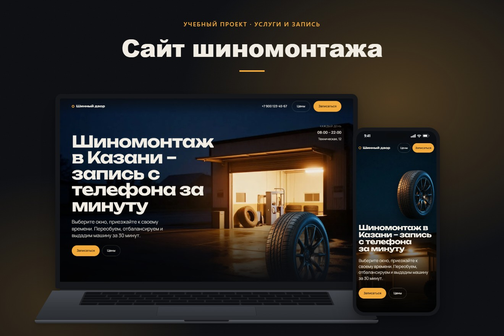
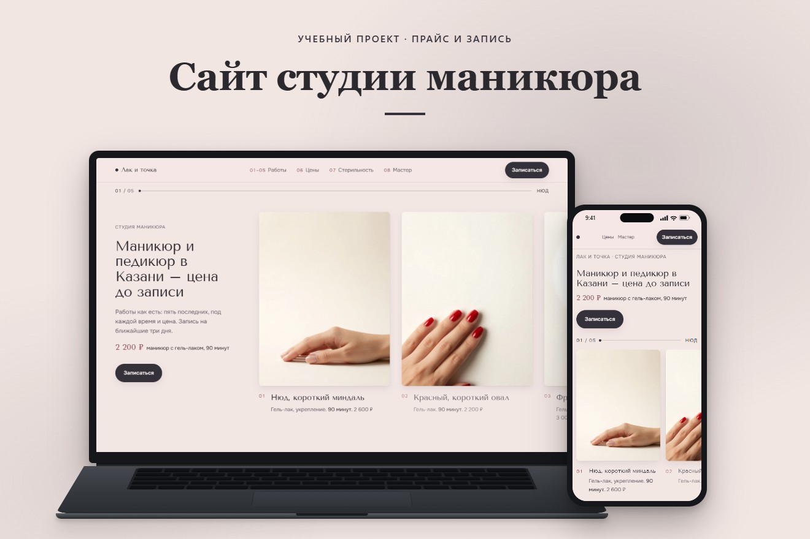

Сайты и веб-инструменты
От короткой страницы до каталога и калькулятора. Структура, мобильная версия и понятное действие для посетителя.
Стартовый сайт — что входит
- Результат
- Одна страница до 5 блоков, версия для телефона, меню/прайс до 10 позиций или ссылка на ваш готовый PDF, контакты и кнопка записи в мессенджер.
- От вас
- Услуги, цены, контакты, фото и логотип, если он есть.
- Передача
- HTML/CSS/JS и изображения; размещение по согласованному адресу.
- Правки
- Две итерации по согласованной структуре. Новые разделы — отдельно.
Запись — через мессенджер или телефон, без выбора свободных окон. Сайт с меню до 50 позиций — от 7 500 ₽. Разовое обновление прайса до 10 позиций — от 1 000 ₽ за согласованный список; регулярные обновления — в пакете поддержки. Домен и платный тариф конструктора не входят. Каталог, калькулятор и дополнительные страницы оцениваются отдельно.
Паприка
Меню, банкеты и бронирование для кафе-бара.
Открыть сайт
Шинный двор
Услуги, цены и запись на шиномонтаж.
Открыть сайт
Лак и точка
Работы мастеров, прайс и запись в салон.
Открыть сайтКлиентский сайт / Красноярск
Что я сделал для «Паприки»
Кафе-бар с меню, блюдами на углях и залами для банкетов. Собрал страницу, на которой гость может выбрать повод и связаться с заведением.
Объединить меню, цены, банкетные залы, адрес и бронирование в одной ссылке.
Структура и сборка страницы, мобильная версия, меню с ценами, блоки залов, часы и контакты.
Кнопка «Забронировать» ведёт в сообщения ВК заведения; рядом доступен телефон. Это обращение администратору, а не автоматическая бронь времени.